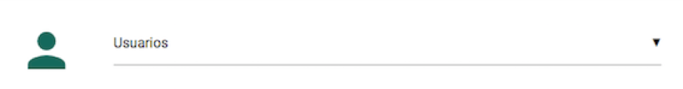
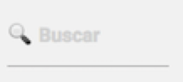
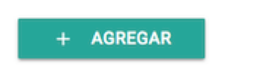
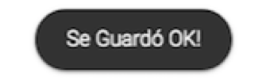
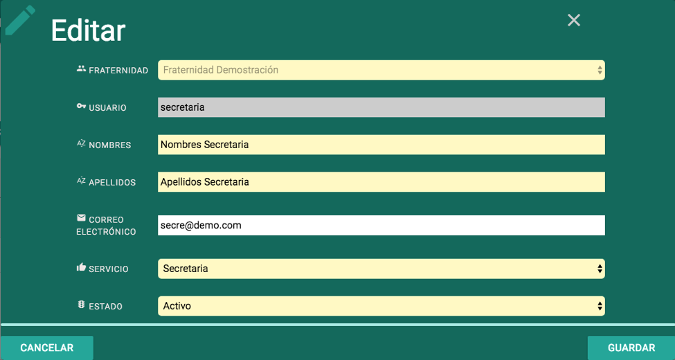
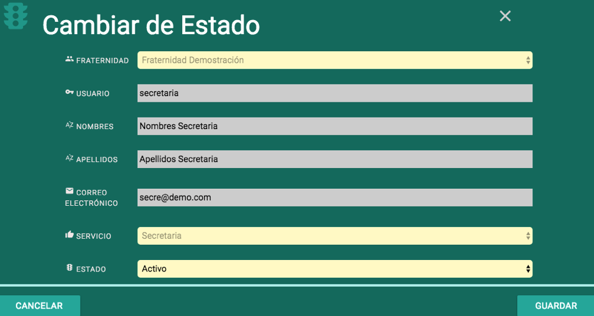

Las operaciones de Gestión de Tablas, se realizan dentro de la opción “Configurar” para los usuarios Secretaria (La tabla de Etiquetas) y Administrador (el resto de tablas como Fraternidades, Lugares de Reunión, Servicios, Tipos de Acta, Usuarios).
Todas las tablas se permiten configurar de forma parecida, es decir, aprendiendo a utilizar esta opción para cualquiera de las tablas, se aprende también a configurar las demás.
Cuando nos referimos a la Gestión de Tablas nos referimos a Agregar, Modificar, Cambiar Estado a los registros de las tablas, si decimos por ejemplo, Gestión de Usuarios estamos hablando de:
- Ver la lista de todos los Usuarios creados.
- Buscar (Filtrar) la lista por cualquiera de sus campos.
- Ordenar la lista por cualquiera de sus campos.
- Modificar los datos de los usuarios.
- Cambiar de Estado a los usuarios.
A continuación se detalla entonces el funcionamiento y capturas de pantalla tomando como ejemplo la tabla de usuarios, reiterando que en el sistema, la tabla de usuarios está disponible únicamente al usuario de tipo Administrador.
Luego de ingresar al sistema como Administrador (según las instrucciones más arriba en este mismo documento), se abrirá automáticamente la opción “Configurar”, ya que el usuario Administrador solo tiene permiso para la opción “Configurar” y a la opción “Cerrar Sesión”. Haga click en el campo que dice “Seleccione Tabla”

Y podrá ver la lista de tablas a las que tiene permiso el usuario Administrador. Desplazándose al final, podrá hacer click en “Usuarios” para abrir la tabla de Usuarios:

Al elegir “Usuarios”, el sistema intentará leer la tabla de usuarios y luego aparecerá la lista en pantalla similar a ésta:

Describiremos a continuación las partes principales y su funcionalidad, reiterando que los mismos conceptos aplican para el resto de tablas. Iniciamos con un acercamiento del Ícono de la Tabla y de su nombre:

Tanto el ícono como el nombre identifican a esta tabla, haciendo click en el nombre de nuevo podrá acceder a la lista de tablas, y puede elegir otra para configurarla.
Luego sigue el botón Agregar, se debe usar para Agregar registros (en este caso, agregar usuarios):

Nota:La funcionalidad de Agregar se explicará más adelante en este mismo documento.
Luego encontramos a la derecha dos botones:

En orden de izquierda a derecha el botón de “Ver Todo”, cuya función es desactivar cualquier filtro o búsqueda de la tabla, y volver a ver todos los registros. Será explicado en su contexto cuando se explique la funcionalidad de Buscar, más adelante en este documento. Le sigue el botón “Refrescar Tabla”. Además de quitar cualquier filtro, pide a la base de datos de nuevo la lista de registros de la tabla, por lo que, si por ejemplo algún usuario ha agregado o modificado otro registro, est botón “Refrescar Tabla” hará que en esta pantalla aparezca ese dato actualizado. Como vuelve a traer los datos, de paso desactivaraá cualquier filtro aplicado en esta pantalla.
Debajo de estos botones tendremos la lista en sí, de los registros de esta tabla. A los datos que se relacionan entre sí de forma horizontal los llamamos Datos de un mismo Registro (o Fila). A los datos de un mimso tipo de forma Vertical los llamamos Campos (o Columnas). Por ejemplo en la siguiente captura de pantalla, notaremos que el registro con código de usuario formadora, tiene en su campo id el valor de 5, en su campo email forma@demo.com, esos tres datos (o campos) junto con los demás de su misma fila, forman un Registro.

Note que ese registro de la formadora tiene en la columna (campo) estado, un color amarillo y una letra I, que nos dice que el registro está Inactivo. Una tabla entonces puede estar compuesta entonces de muchos registros con diferentes estados, y manejaremos normalmente tres tipos de Estados. Nota: Todos éstos son ejemplos pero por supuesto su pantalla de usuarios puede ser diferente según los datos que estén manejando actualmente.
Activo: El registro está disponible para ser usado.
 Inactivo: Usado cuando se requiere desactivar un Registro para que no aparezca en las listas de selección (por ejemplo si un usuario está Inactivo, no podrá acceder con ese usuario al sistema). A esto le llamamos un borrado lógico, pues es como un filtro para que no pueda ser usado, pero la información sigue guardada en la base de datos.
Inactivo: Usado cuando se requiere desactivar un Registro para que no aparezca en las listas de selección (por ejemplo si un usuario está Inactivo, no podrá acceder con ese usuario al sistema). A esto le llamamos un borrado lógico, pues es como un filtro para que no pueda ser usado, pero la información sigue guardada en la base de datos.
 Retirado: En términos prácticos funciona igual que el Inactivo, pero adicionalmente ese registro Retirado es candidato a ser eliminado físicamente, no por el sistema, sino por procesos de depuración de información de la base de datos.
Retirado: En términos prácticos funciona igual que el Inactivo, pero adicionalmente ese registro Retirado es candidato a ser eliminado físicamente, no por el sistema, sino por procesos de depuración de información de la base de datos.
Al inicio de la lista de registros de la tabla, cada columna tiene un espacio como este:

Haciendo click en buscar, se habilita para que se pueda escribir parte de una palabra o una palabra completa, y el sistema irá filtrando la lista según si encuentra o no coincidencias en la tabla. Se debe tener en cuenta que cada columna tiene su campo, y que si no hay información que coincida no se mostrará ningún registro. Borrando las letras introducidas volverán a aparecer los registros, o si se desea, se puede usar ya sea el botón “Ver Todo” para quitar los filtros, o el botón “Refrescar Tabla” para quitar los filtros y además traer cualquier novedad en esa tabla y mostrarlos en pantalla. Se muestra aquí nuevamente los botones (de izquierda a derecha) “Ver todo” y “Refrescar Tabla”:
Debajo de cada espacio de “Buscar”, aparece el nombre de la columna (campo):

y note que inicia con un carácter de fecha vertical apuntando arriba y abajo, esto para indicar, que haciendo click en ese nombre, podrá Ordenar la tabla por esa columna. Haciendo click por primera vez, se ordenará por esa columna de forma Ascendente, y si se hace de nuevo click se Ordenará Descendentemente. Para recuperar el orden inicial, usar el botón “Refrescar Tabla”.
Para abrir el formulario que permite agregar usuarios, se debe hacer click en el botón “Agregar”:

.. y se abrirá el formulario para agregar, que lucirá similar a este (el formulario contendrá los campos según la tabla que se esté configurando):
Aparecerá entonces un ícono y nombre de formulario (Agregar) y al lado derecho una X con la que se puede cerrar sin guardar.
Luego cada campo con ícono propio pequeño, su nombre, y el campo de entrada, si termina con dos triángulos a la derecha es un cuadro de selección, haciendo click en cualquier parte de ese campo de entrada aparecerán las opciones disponibles para elegir en ese campo.
Los campos con fondo Amarillo indican que son Requeridos (Obligatorios, no pueden dejarse en blanco) para poder Guardar o Grabar el registro. Esto aplica también para otros formularios como Edicitar o Cambiar de Estado, descritos más adelante.
Debajo a la izquierda el botón para Cancelar (Cerrar sin guardar, hace lo mismo que la X arriba superior derecha), y en la parte derecha el botón para Guardar. Si alguno de los campos requeridos quedó en blanco, se resaltará con borde punteado rojo. Por ejemplo en esta imagen:

se puede observar que se intentó guardar vacíos los campos Apellidos y Correo Electrónico. El campo Apellidos, al ser requerido, aparece con un reborde en rojo, si no se escribe información allí, no se podrá guardar el registro. Sin embargo, el campo correo electrónico no es requerido para guardar, por lo tanto sigue con su fondo en blanco. Una vez se rellenen todos los campos obligatorios, y se vuelva a hacer click en Guardar, el reborde rojo desaparecerá.
En caso de que el registro se haya guardado correctamente, se cerrará automáticamente el formulario, y aparecerá en pantalla un recuadro a manera de notificación, parecido a este:

Dicha notificación (y similares), aparecerán solo por 3 segundos, o también se puede arrastrar para que desaparezca. Dependiendo del dispositivo con el que se accede al sistema puede aparecer en la esquina superior derecha (pantallas grandes), o en la parte inferior (en pantallas pequeñas). En pantalla entonces se refrescará automáticamente la tabla, y volverá a aparecer la lista con el registro adicionado junto con los demás.
Para Editar o Modificar datos de un registro en la tabla, basta con hacer click en cualquier dato o campo de su registro (fila), excepto en el campo estado. Al hacer click se abre el formulario que lucirá como este:

En este caso, el campo Usuario está en fondo gris, indicandoque no se puede cambiar su valor, pues es el campo llave del registro (por el cual se identifica en el sistema). Note que tiene un ícono de una pequeña llave a la izquierda de la palabra Usuario (Nombre de este campo). Note que los demás campos están con fondo amarillo, indicando que son obligatorios, excepto por el campo correo electrónico.
Un caso especial es el campo Fraternidad, es obligatorio y aparece fondo amarillo, pero no se puede modificar porque este campo se usa para separar la información entre las fraternidades creadas en el sistema, es decir, para que un usuario de una Fraternidad solo pueda ver y usar la información de su Fraternidad, por esta razón se ve diferente a los demás campos.
Por ejemplo en esta imagen:

se puede observar que se intentó guardar vacíos los campos Apellidos y Correo Electrónico. El campo Apellidos, al ser requerido, aparece con un reborde en rojo, si no se escribe información allí, no se podrá guardar el registro. Sin embargo, el campo correo electrónico no es requerido para guardar, por lo tanto sigue con su fondo en blanco. Una vez se rellenen todos los campos obligatorios, y se vuelva a hacer click en Guardar, el reborde rojo desaparecerá.
En caso de que el registro se haya guardado correctamente, se cerrará automáticamente el formulario, y aparecerá en pantalla un recuadro a manera de notificación, parecido a este:
Dicha notificación (y similares), aparecerán solo por 3 segundos, o también se puede arrastrar para que desaparezca. Dependiendo del dispositivo con el que se accede al sistema puede aparecer en la esquina superior derecha (pantallas grandes), o en la parte inferior (en pantallas pequeñas). En pantalla entonces se refrescará automáticamente la tabla, y volverá a aparecer la lista con el registro (con sus datos modificados) junto con los demás.
Existe un formulario especial para cambio de estado. Se abre haciendo click en el Estado de un registro (sin importar si está Activo, Inactivo o Retirado). Este formulario mostrará así como el formulario de Editar, los campos en pantalla, pero permite cambiar únicamente el estado, esto es útil cuando se quiere evitar cambiar por error alguno de los otros campos, o por ejemplo si un tipo de usuario se le permite solo a Cambiar el Estado pero no se le permite cambiar ningún otro campo. Al hacer click en el estado se abrirá el formulario parecido a éste:

Luego de cambiar el estado y en caso de que el registro se haya guardado correctamente, se cerrará automáticamente el formulario, y aparecerá en pantalla un recuadro a manera de notificación, parecido a este:
Dicha notificación (y similares), aparecerán solo por 3 segundos, o también se puede arrastrar para que desaparezca. Dependiendo del dispositivo con el que se accede al sistema puede aparecer en la esquina superior derecha (pantallas grandes), o en la parte inferior (en pantallas pequeñas). En pantalla entonces se refrescará automáticamente la tabla, y volverá a aparecer la lista con el registro (con su estado modificado) junto con los demás.